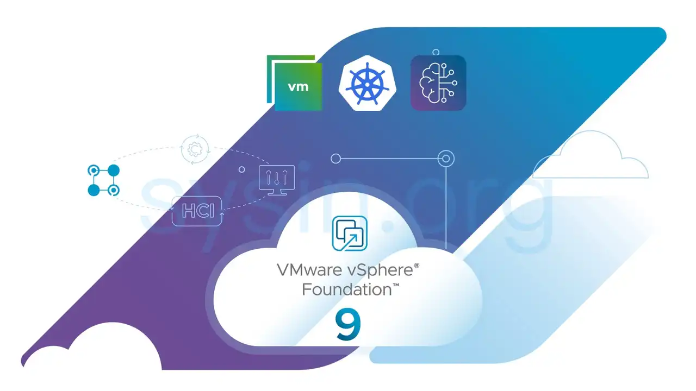
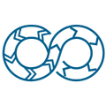

请访问原文链接：VMware vSphere Foundation 9.1 - 现代化企业级工作负载平台 查看最新版。原创作品，转载请保留出处。
作者主页：sysin.org
VMware vSphere Foundation
部署一个面向现代 IT 环境、提供企业级超融合基础架构的工作负载平台。

企业级工作负载平台
🧊 现代化基础架构
提供具备内置智能与统一管理能力的可扩展基础架构。
🧊 加速创新
借助自助式 Kubernetes 与硬件加速器支持，构建、运行并部署现代化应用。

🧊 安全且具备韧性
通过内置合规能力与可靠恢复功能，确保网络韧性与数据隐私。
面向 AI、云原生与传统应用的统一安全工作负载平台
🧊 提升运营效率
借助智能化运维简化管理并优化基础架构。

🧊 加速创新
借助专为 DevOps 与云原生创新打造的平台，更快交付应用。
🧊 提升安全性
为每个工作负载提供内置保护、韧性与合规能力。
🧊 全面提升工作负载性能
借助专为性能扩展打造的平台，释放现代应用所需的可扩展性、速度与效率。
vSphere Foundation 新特性
🧊 借助 NVMe 分层实现更优经济性
在实现主机零停机激活的同时，将内存容量扩展至最高四倍，并将服务器总体拥有成本（TCO）降低最高 40%，同时获得更优数据库性能 (sysin)。
🧊 借助 Typology 调度全面提升性能
通过芯片感知优化，在四路系统上实现最高 68% 的性能提升，为关键任务应用提供可预测的响应能力。
🧊 借助实时补丁实现无中断安全更新
在现代硬件上为 80% 的补丁提供零停机安全更新 (sysin)，无需主机迁移或计划性中断即可持续保持安全态势。
🧊 借助主动洞察简化 IT 运维
通过原生集成于控制台中的自动化分析与引导式修复，将管理排障工作量降低 60%，从而减少运维复杂性与停机时间。

🧊 高效 Kubernetes 运维
快速部署 Kubernetes 集群，并支持独立升级 (sysin)，以便获取最新 Kubernetes 功能。

🧊 统一自动化与集成
通过统一 SDK 与一致的 API，简化 vSphere Foundation 的部署与集成。
解决传统与下一代应用挑战
🧊 人工智能与机器学习
为先进 AI/ML 服务与工作负载提供企业级数据中心、云与边缘基础架构。
🧊 大数据与现代数据应用
简化大数据基础架构管理，并通过经济高效、统一的故障切换保护最大程度减少停机时间。轻松实现数据中心资源优先级划分与共享，以支持智能决策。
🧊 高性能计算（HPC）
通过按需基础架构、集中式管理与数据治理（包括敏感数据控制）更快获得洞察。vSphere HPC 选项专为 HPC 工作负载扩展而设计。
组件与高级服务
提供智能化运维管理，专为提升基础架构性能、可用性与效率而打造，并在统一平台中提供全面可视化与分析能力。
VMware vSphere
- 面向传统与下一代应用的企业级工作负载引擎
VMware Cloud Foundation Operations
- 通过主动式智能管理简化私有云运维。
VMware vSAN
- 企业级超融合存储软件
VMware Live Recovery
- 跨本地与公有云环境的大规模安全网络恢复与站点恢复。
VMware Avi Load Balancer
- 面向 VMware Cloud Foundation 的软件定义负载均衡与安全解决方案。
下载地址
VMware vSphere Foundation 通过 VCF Installer 进行部署。
VMware Cloud Foundation VCF Installer 9.0 | 17 JUN 2025
- VCF Installer
- Download Tool (Optional)
- 文档：
VMware Cloud Foundation VCF Installer 9.1 | 12 MAY 2026
- VCF Installer
- Download Tool (Optional)
- 请访问：VMware Cloud Foundation Installer 9.1 - VCF 和 VVF 部署工具
VMware vSphere Foundation 是一套关联的产品组合，组件如下：
vSphere：VMware vSphere 9.1 发布 - 企业级工作负载引擎
ESXi：
vSAN：VMware vSAN 9.1 发布 - 面向云计算的软件定义存储
Operations：
Tools:
Add-on：
⚠️ 提示：不存在 VCF 9 全套，若干高级服务和组件暂未对外开放。

文章用于推荐和分享优秀的软件产品及其相关技术，所有软件默认提供官方原版（免费版或试用版），免费分享。对于部分产品笔者加入了自己的理解和分析，方便学习和研究使用。任何内容若侵犯了您的版权，请联系作者删除。如果您喜欢这篇文章或者觉得它对您有所帮助，或者发现有不当之处，欢迎您发表评论，也欢迎您分享这个网站，或者赞赏一下作者，谢谢！
 支付宝赞赏
支付宝赞赏  微信赞赏
微信赞赏赞赏一下
敬请注册！点击 “登录” - “用户注册”（已知不支持 21.cn/189.cn 邮箱）。 请勿使用联合登录（已关闭）。